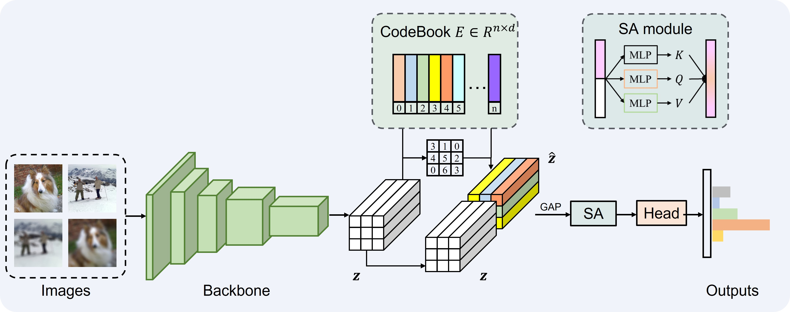
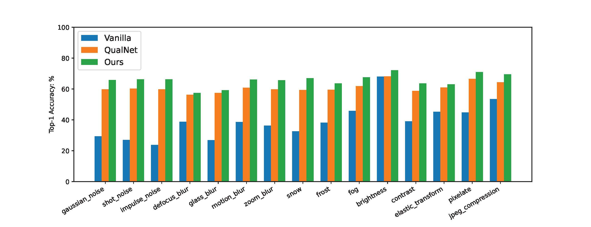
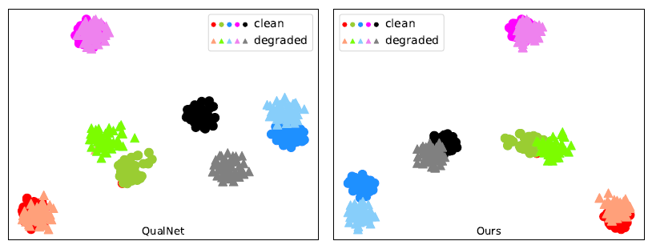
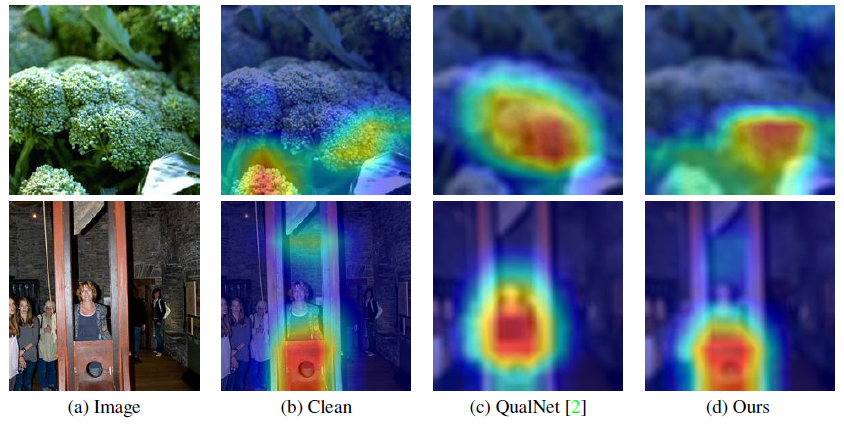

Vector Quantization with Self-Attention for Quality-Independent
Representation Learning
Zhou Yang1 Weisheng Dong1* Xin Li2 Mengluan Huang1 Yulin Sun1 Guangming Shi1
1Xidian University 2 West Virginia University
 |
Figure 1. The overall architecture of our proposed method. The mini-batch of input contains both clean and corrupted images. Features extracted from the backbone network are quantized by the codebook module.
Then z and \hat(z) are concatenated and pooled. Subsequently, after being enhanced by the SA module, the features are input into the head network to get the final output results.
Abstract
Recently, the robustness of deep neural networks has drawn extensive attention due to the potential distribution shift between training and testing data (e.g., deep models trained on high-quality images are sensitive to corruption during testing). Many researchers attempt to make the model learn invariant representations from multiple corrupted data through data augmentation or image-pair-based feature distillation to improve the robustness. Inspired by sparse representation in image restoration, we opt to address this issue by learning image-quality-independent feature representation in a simple plug-and-play manner, that is, to introduce discrete vector quantization (VQ) to remove redundancy in recognition models. Specifically, we first add a codebook module to the network to quantize deep features. Then we concatenate them and design a self-attention module to enhance the representation. During training, we enforce the quantization of features from clean and corrupted images in the same discrete embedding space so that an invariant {\em quality-independent} feature representation can be learned to improve the recognition robustness of low-quality images. Qualitative and quantitative experimental results show that our method achieved this goal effectively, leading to a new state-of-the-art result of 43.1 $\%$ mCE on ImageNet-C with ResNet50 as the backbone.
 |
|
|||
| CVPR 2023 | Supplementary Material |
Citation
Zhou Yang, Weisheng Dong, Xin Li, Mengluan Huang, Yulin Sun, and Guangming Shi. Vector Quantization with Self-Attention for Quality-Independent Representation Learning. In Proceedings of the IEEE/CVF Conference on Computer Vision and Pattern Recognition, 2023.
Bibtex
@inproceedings{yang2023vector,
title={Vector Quantization with Self-Attention for Quality-Independent Representation Learning },
author={Yang, Zhou and Dong, Weisheng and Li, Xin and Huang, Menguan and Sun, Yulin and Shi, Guangming},
booktitle={ Proceedings of the IEEE/CVF Conference on Computer Vision and Pattern Recognition},
year={2023},
}
Download
 |
| Github |
Results
Quantitative Results:
 |
| Figure 1. The detailed top-1 accuracy results of the different methods for each corruption type in benchmark dataset ImageNet-C. |
Visualization Results:
 |
| Figure 2. Class-wise feature distribution. Symbols with similar colors have the same labels. Marks with large color differences represent different labels of image features. Dot marks denote clean features, while triangle marks indicate degraded ones. |
 |
| Figure 3. The Grad-CAM maps of different models on defocus blur images. (a) The original clean images. (b) The maps of vanilla ResNet50 model on clean images. (c) and (d) show the maps of QualNet50 and our proposed method on defocus blur images with severity level 3. The results show that our method still can focus on the salient object area without being seriously affected by corruption. |
Contact
Zhou Yang, Email: yang_zhou@stu.xidian.edu.cn
Weisheng Dong, Email: wsdong@mail.xidian.edu.cn
Xin Li, Email: xin.li@mail.wvu.edu
Mengluan Huang, Email: mlhuang@stu.xidian.edu.cn
Yulin Sun, Email: daitusun@gmail.com
Guangming Shi, Email: gmshi@xidian.edu.cn